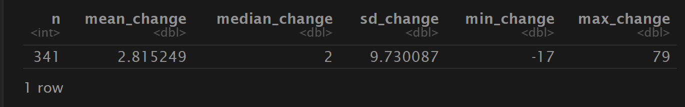
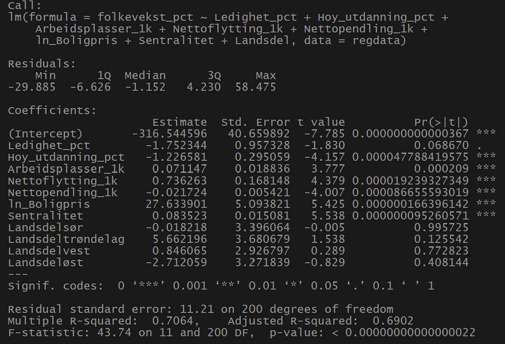
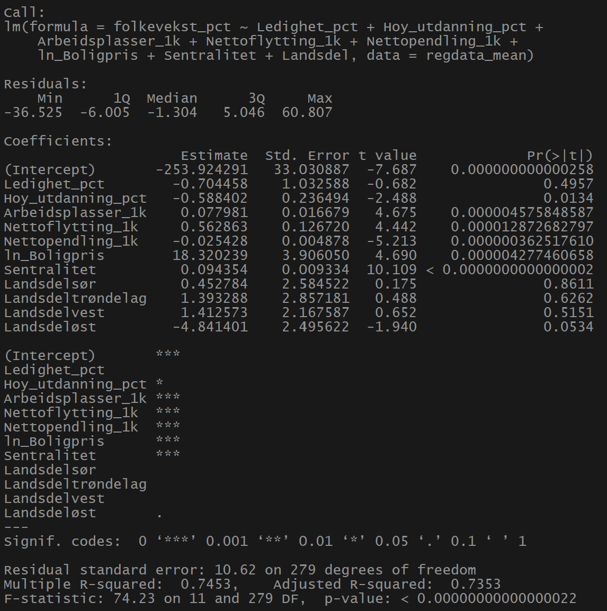
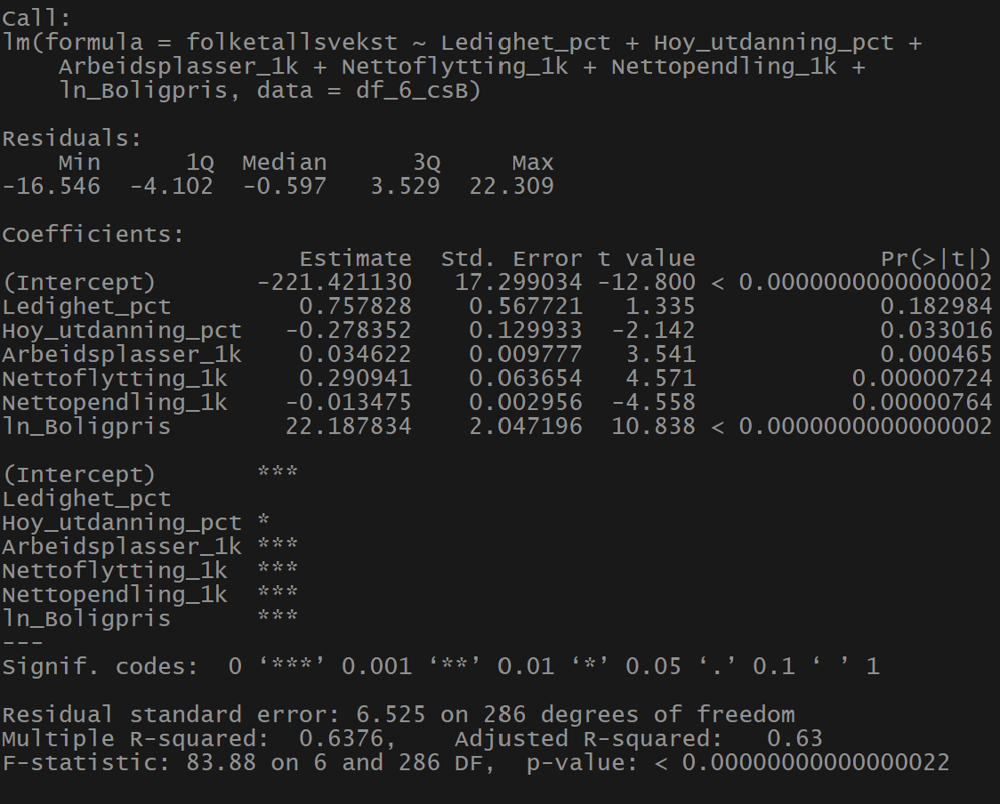
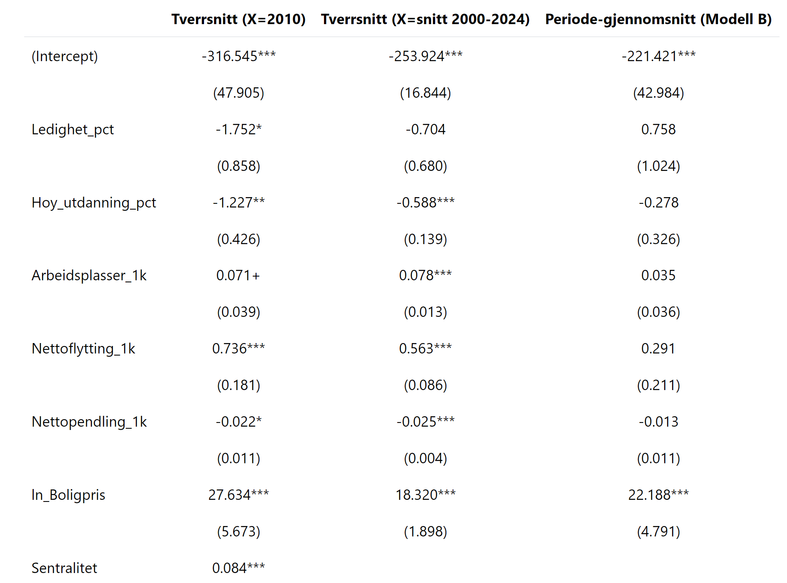
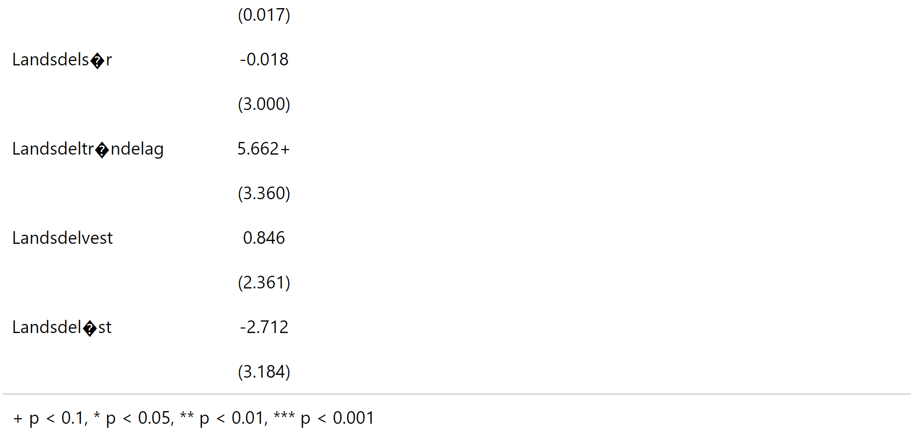
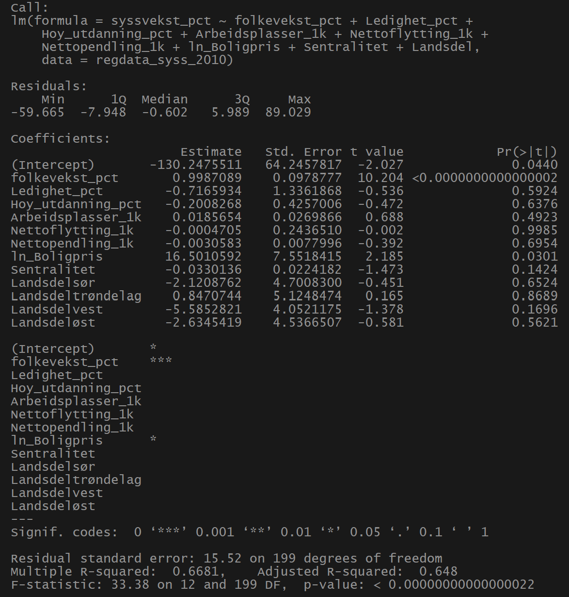
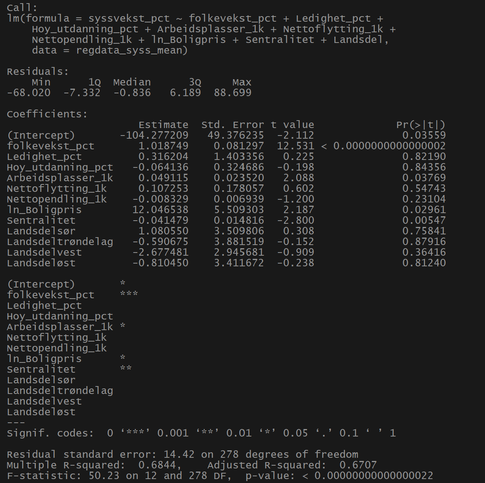
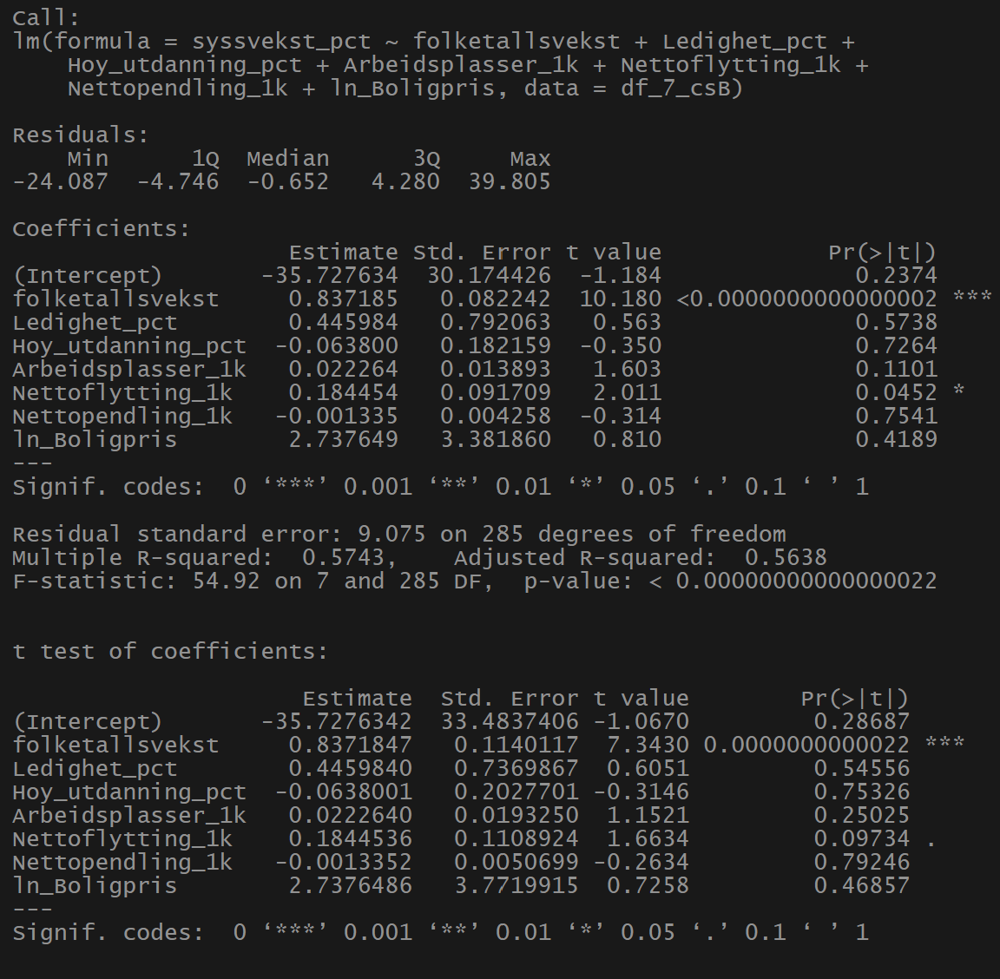

Call:
lm(formula = Arbeidssted ~ beftot, data = regresjon)
Residuals:
Min 1Q Median 3Q Max
-25962 -540 1159 1756 69577
Coefficients:
Estimate Std. Error t value Pr(>|t|)
(Intercept) -2254.158942 47.010461 -47.95 <0.0000000000000002 ***
beftot 0.675890 0.001123 601.77 <0.0000000000000002 ***
---
Signif. codes: 0 '***' 0.001 '**' 0.01 '*' 0.05 '.' 0.1 ' ' 1
Residual standard error: 4192 on 8923 degrees of freedom
Multiple R-squared: 0.976, Adjusted R-squared: 0.9759
F-statistic: 3.621e+05 on 1 and 8923 DF, p-value: < 0.00000000000000022Regional utvikling i Norge
Datainnsamling
Sentralitetsindeksen for norske kommuner
SSB sin sentralitetsindeks- Beksriver hvor sentralt kommuner ligger
Basert på to hovedvariabler: Arbeidsmarked og og tilgang på tjenester
6 Sentralitetsklasses
Benyttet 2020 indeksen

341 kommuner er med
Prosentvis arbeidsledighet
NAV og SSB (AKU) måler begge arbeidsledighet, men de gjør det på forksjellige måter.
NAV- Antall registrert i NAVs system
SSB- Hentet fra AKU (Arbeidskraftundersøkelsen)
Bygger på samme ide om hva arbeidsledighet er
Datainnhenting
Alle data er hentet fra SSB sine sider, her er en oversikt hvilken tabeller som er benyttet.

Regional utvikling i Norge
Andersson 2019 skriver om Norges utvikling fra 1970 til 2017
Hvordan uliker variabler varierer rundt om i Norge
Høy befolkingsvekst i små kommuner fra 1970 til 1980, så større vekst i store kommuner.
Sentralisering skjer i arbeidsmarkedsregioner, og ikke mellom dem. Få tegn til økonomisk konvergens mellom regioner i Norge, i motsetning til mange andre europeiske land.
Pendling viktig.
Gjennom sin brede tilnærming gir Regionale utviklingstrekk 2025 et helhetlig bilde av strukturelle krefter som driver regional utvikling i Norge
Budrenteteori
Budrenteteorien gir et sentralt analytisk rammeverk for å forstå hvordan geografisk plassering påvirker arealbruk og boligpriser (Capello, 2016).
Ifølge teorien faller betalingsvilligheten for bolig med økende avstand til sentrum eller sentrale arbeidsmarkeder.
Osland & Thorsen (2008) Nyanseres denne teorien
Viser at boligpriser ikke bare påvirkes av fysisk avstand til sentrum, men også av regional arbeidsmarkedstilgjenglighet.
Harris-Todaro modellen
En modell som sier noe om hvorfor personer flytter til byen selv om det er høy arbeidsledighet.
Vekst i Norge
Hvorfor vokser noen byer raskere enn andreÅ
Byer med offshorevirksomhet eller andre naturessursbaserte virksomheter som fisk kraft som har gitt en høyere produksjonsvekst enn andre byer (Grünfeld & Leknes, 2016).
Den andre hovedforklaringen de peker på er utdanningsnivået til arbeidsstyrken
Visuell fremstilling av utviklingen i Norge etter 1986
Videre skal vi se på kartfremstillinger som illutreerer utviklinger av diverse variabler
Folketallsutvikling kart

Prosentvis folketallsvekst etter år 2000, der rosa er negativ utvikling og grønn er positiv utvikling
Folketallsutvikling graf

Figur 1: Folketallsutvikling fordelt på sentralitetsklasser
Befolkningsutvikling 20-29 kart

Andel befolkning i alder 20-29 år i 2024, der mørkere farge er høyere andel
Befolkningsutvikling 20-29 graf

Utvikling i andel befolkning for 20-29 år, fra år 2000-2024, fordelt på sentralitetsklasser
Prosentvis arbeidsledighet kart

Prosentvis arbeidsledighet for 2024, der mørkere farge er høyere andel
Prosentvis arbeidsledighet graf

Utvikling i prosentvis arbeisledighet fra 2008-2024, fordelt på sentralitetsklasser
Sysselsettingsvekst kart

Prosentvis sysselsettingsvekst etter år 2000, der lilla er negativ vekst og grønn er positiv vekst
Sysselsettingsvekst graf

Utvikling i sysselsettingsvekst etter år 2000, fordelt på sentralitetsklasser
Kvmpris utvikling kart

Gjennomsnittlig kvadratmeterpris for eneboliger i 2024, der skravert område betyr 0 omsatte boliger, og jo mørkere farge jo høyere pris
Kvmpris utvikling graf

Utvikling i kvadratmeterpris for eneboliger og leilighet fordelt på sentralitetsklasser etter år 2002
Utdanning utvikling kart

Andel innbyggere med høyere utdanning i 2024
Utdanning utvikling graf

Utvikling i andel personer med høyere utdanning etter år 1986 fordelt på sentralitetsklasser
Flytting utvikling kart (18-29)

Netto utflytting per 1000 innbyggere for alder 18-29, der rød er utflytting og blå er innflytting
Flytting utvikling kart (30+)

Netto utflytting per 1000 innbyggere for alder 30+.’, der rød er utflytting og blå er innflytting
Flytting utvikling graf

Utvikling i netto flytting for alder 18-29 og 30+, fordelt på sentralitetsklasseretter år 2010
Pendling utvikling kart

Netto pendling per 1000 arbeidsplasser, der rød er utpendling og blå er innpendling
Pendling utvikling graf

Utvikling i pendling per 1000 arbeidsplass etter år 2000, fordelt på sentralitetsklasser
Korrelasjonsberegninger
Korelasjon mellom gitte variabler
Som første deskriptive tilnærming presenteres korrelasjonsberegninger på utvalgte variabler. Korrelasjonen er beregnet for alle de norske kommuner i årene 2014 og 2024. Korelasjonsverdien er en indikator på graden av samvariasjon mellom to gitte variabler. Skalen for korelasjon går fra -1 til 1. Jo nærmere 1 et positivt tall er, jo større tyder på det på en positiv samvariasjon, og vice versa med negative tall.

Paneldata
Korrelasjoner basert på årlige endinger innen hver kommuner.
Laget nytt datasett med Delta verdier

Resultater fra Paneldata analyse

Trege virkninger


Spredningsdiagrammer

Sentralitet og boligpris

Sentralitet og innpendling

Arbeidsledighet og utflytting

Sammenheng mellom befolkning og sysselsetting
Call:
lm(formula = beftot ~ Arbeidssted, data = regresjon)
Residuals:
Min 1Q Median 3Q Max
-88595 -2808 -1888 738 41682
Coefficients:
Estimate Std. Error t value Pr(>|t|)
(Intercept) 3587.5154 67.0487 53.51 <0.0000000000000002 ***
Arbeidssted 1.4440 0.0024 601.77 <0.0000000000000002 ***
---
Signif. codes: 0 '***' 0.001 '**' 0.01 '*' 0.05 '.' 0.1 ' ' 1
Residual standard error: 6127 on 8923 degrees of freedom
Multiple R-squared: 0.976, Adjusted R-squared: 0.9759
F-statistic: 3.621e+05 on 1 and 8923 DF, p-value: < 0.00000000000000022Twoways effects Within Model
Call:
plm(formula = Arbeidssted ~ beftot, data = regresjon, effect = "twoways",
model = "within", index = c("knr24", "år"))
Balanced Panel: n = 357, T = 25, N = 8925
Residuals:
Min. 1st Qu. Median 3rd Qu. Max.
-18558.7459 -135.5622 1.3733 150.1699 27175.3449
Coefficients:
Estimate Std. Error t-value Pr(>|t|)
beftot 0.5887468 0.0024466 240.64 < 0.00000000000000022 ***
---
Signif. codes: 0 '***' 0.001 '**' 0.01 '*' 0.05 '.' 0.1 ' ' 1
Total Sum of Squares: 67985000000
Residual Sum of Squares: 8740500000
R-Squared: 0.87144
Adj. R-Squared: 0.8657
F-statistic: 57906 on 1 and 8543 DF, p-value: < 0.000000000000000222Regresjon viser sammenhengen mellom befolkning og sysselsetting
Byttet på befolkning og sysselsetting som avhengig variabel.
Videre forsøkte vi å sette kommune og år som fast effekt for å se om resultatene endret seg noe.
Tidligere så vi på kurver for befolkningsutvikling og sysselsetting
beftot Arbeidssted
beftot 1.0000000 0.9879029
Arbeidssted 0.9879029 1.0000000For å regne ut korrelasjonen har vi brukt antall sysselsatte og antall i befolkning.
For å få et mer hensiktsmessig resultat kunne vi hatt andel sysselsatte eller sett på atbeidsplass per 1000 innbyggere,
Relevante hypoteser basert på deskriptiv statistikk
Så langt gjennom denne oppgaven er det blitt presentert mye deskriptiv statistikk knyttet til regional utvikling. Samlet sett gir dette et godt grunnlag for hypoteser for hvordan ulike variabler henger sammen.
Kommuner med høy sentralitet opplever større befolknignsvekst
I oppgave 3 fant vi en positiv korrelasjonskoeffisient på om lag 0,42 mellom sentralitetsindeksen og befolkningsvekst. Dette indikerer en moderat positiv sammenheng og gir empirisk støtte til hypotesen om at kommuner med høy sentralitet i større grad opplever befolkningsvekst enn mindre sentrale kommuner.
Hypotesen kan underbygges teoretisk gjennom agglomerasjonsteori. Agglomerasjonseffekter beskriver hvordan bedrifter og arbeidstakere har insentiver til å lokalisere seg i samme geografiske områder. Bedrifter etablerer seg i sentrale områder for å dra nytte av såkalte “matching, sharing og learning”-fordeler. Dette innebærer bedre match mellom arbeidsgivere og arbeidstakere, deling av infrastruktur og tjenester, samt kunnskapsspredning mellom aktører Capello (2016) s.3.
I sentrale områder oppstår det større og mer diversifiserte arbeidsmarkeder, med høyere grad av spesialisering. Dette reduserer risikoen for arbeidstakere og øker sannsynligheten for å finne relevant arbeid, noe som igjen gjør slike områder mer attraktive. Resultatet kan bli en selvforsterkende vekstprosess der flere arbeidsplasser tiltrekker flere innbyggere, som igjen skaper grunnlag for ytterligere næringsaktivitet
Grafen over befolkningsutvikling etter sentralitetsklasse fra oppgave 2 gir ytterligere støtte til denne mekanismen. Kommuner i sentralitetsklasse 1, 2 og 3 viser en tydelig og markant vekst gjennom perioden. Klasse 4 viser også økning, men i et mer moderat tempo. De minst sentrale kommunene har gjennomgående flat utvikling, og klasse 6 har samlet sett opplevd befolkningsnedgang. Dette mønsteret er konsistent med hypotesen om at høyere sentralitet er forbundet med sterkere befolkningsvekst.
Kommuner med lav andel innbyggere i alderen 20-29 år opplever høyere neto utflytting
En annen relevant problemstilling er sammenhengen mellom andelen av befolkningen i aldersgruppen 20–29 år og kommunens netto utflytting. Hypotesen er at kommuner med lav andel unge voksne i større grad opplever netto utflytting enn kommuner med høyere andel i denne aldersgruppen.
Korrelasjonsberegningene for 2014 og 2024 viser imidlertid en svært svak positiv samvariasjon mellom variablene. Dette gir ikke empirisk støtte til en sterk lineær sammenheng. Resultatet indikerer at variasjon i andelen 20–29 år alene i liten grad forklarer forskjeller i netto utflytting mellom kommuner.
Selv om den statistiske sammenhengen er svak, finnes det teoretiske mekanismer som tilsier at relasjonen kan være kompleks. Aldersgruppen 20–29 år er den mest mobile i befolkningen. I denne fasen av livsløpet er tilknytningen til hjemstedet ofte svakere, og mange flytter for utdanning eller arbeid. Kommuner med attraktive utdanningsinstitusjoner og brede arbeidsmarkeder fremstår derfor som særlig attraktive for denne gruppen.
Dersom en kommune over tid har lav andel unge voksne, kan dette være et resultat av tidligere utflytting etter videregående opplæring. Samtidig kan nettoflytting som indikator skjule betydelig brutto mobilitet, ettersom både inn- og utflytting kan være høy uten at nettoen blir stor.
Kartene over netto flytting og andel unge viser at særlig kommuner på Vestlandet og Østlandet, inkludert Oslo-området, har hatt positiv netto innflytting og samtidig relativt høy andel unge voksne. Dette kan indikere at sentrale arbeids- og utdanningsmarkeder tiltrekker unge. I mer perifere områder kan utflytting av unge bidra til en aldrende befolkningssammensetning.
Samtidig finnes det unntak. I enkelte nordnorske kommuner er andelen unge relativt høy, delvis som følge av militær tilstedeværelse. Dette illustrerer at strukturelle forhold kan påvirke alderssammensetningen uavhengig av tradisjonelle migrasjonsmekanismer.
Samlet sett tyder analysen på at sammenhengen mellom andelen 20–29 år og netto utflytting ikke er entydig, og at den påvirkes av både utdanningstilbud, arbeidsmarked, institusjonelle forhold og livsløpsdynamikk.
I likhet med forrige eksempel er sammenhengen mellom arbeidsledighet og netto utflytting et komplekst tema, hvor flere mekanismer kan trekke i ulike retninger. Korrelasjonsberegningene viser en svak positiv sammenheng mellom variablene, noe som indikerer at høyere arbeidsledighet ikke entydig er forbundet med økt netto utflytting.
Kartene viser at flere av kommunene med relativt høy arbeidsledighet befinner seg på Østlandet og i andre sentrale områder, som samtidig har hatt positiv netto innflytting. Dette kan ved første øyekast virke motstridende, ettersom tradisjonell arbeidsmarkedsteori tilsier at arbeidstakere flytter fra områder med høy arbeidsledighet til områder med bedre jobbmuligheter.
Teori om arbeidsmarkedsjustering og mobilitet tilsier at arbeidskraft beveger seg mot regioner med høy etterspørsel etter arbeidskraft. Dette skulle isolert sett tilsi at kommuner med høy arbeidsledighet burde oppleve netto utflytting. Samtidig kan sentrale arbeidsmarkeder tiltrekke arbeidssøkere selv om ledigheten midlertidig er høy. Store og diversifiserte arbeidsmarkeder gir større sannsynlighet for å finne en jobb som matcher kompetanse og preferanser Capello (2016) s. 155.
Arbeidstakere kan derfor være villige til å akseptere en periode med arbeidsledighet i sentrale områder, dersom forventningen om fremtidige jobbmuligheter er høyere der enn i mindre sentrale kommuner. I mindre arbeidsmarkeder kan man få jobb raskere, men innenfor et smalere spekter av yrker. Dette kan særlig være relevant for høyt utdannede og spesialiserte arbeidstakere.
Den norske velferdsmodellen kan også bidra til å forklare dette mønsteret. Et relativt sterkt sosialt sikkerhetsnett gjør det mulig å være arbeidsledig i en periode uten umiddelbar økonomisk nød, noe som kan redusere insentivet til rask geografisk mobilitet.
Samlet sett indikerer analysen at sammenhengen mellom arbeidsledighet og netto utflytting ikke er entydig, og at sentralitet, arbeidsmarkedsstruktur og institusjonelle forhold påvirker relasjonen.
Kartet over andel med høyere utdanning viser en tydelig konsentrasjon i Oslo- og Akershusområdet, samt i flere kommuner på Sør- og Vestlandet, herunder deler av Vestfold, Telemark, Agder og tidligere Hordaland.
Sammenlignes dette med kartet over prosentvis vekst i sysselsetting siden 2000, ser vi at mange av de samme områdene også har hatt sterk sysselsettingsutvikling. Dette gir empirisk støtte til hypotesen om en positiv sammenheng mellom utdanningsnivå og sysselsetting.
Søylediagrammene i oppgave 3, fordelt etter sentralitetsgruppe, underbygger også denne sammenhengen. De mest sentrale kommunene skårer høyest både når det gjelder andel med høyere utdanning og sysselsetting. Dette kan indikere at kunnskapsintensive arbeidsmarkeder i sentrale områder bidrar til høyere sysselsettingsnivå.
Teoretisk kan sammenhengen forklares gjennom humankapitalteori. Høyere utdanning øker produktiviteten til arbeidskraften og gjør regioner mer attraktive for kunnskapsintensive virksomheter. Dette kan bidra til flere arbeidsplasser, høyere verdiskaping og dermed høyere sysselsetting per innbygger. Samtidig kan det foreligge en selvforsterkende mekanisme, der kommuner med høyt utdanningsnivå tiltrekker seg både bedrifter og nye høyt utdannede arbeidstakere.
Det er imidlertid viktig å være oppmerksom på at sammenhengen også kan påvirkes av sentralitet, næringsstruktur og historiske utviklingsmønstre. Utdanning kan derfor både være en årsak til og et resultat av høy sysselsetting.
Basert på kartvisualisering og korrelasjonsanalyse forventes det en positiv sammenheng mellom sentralitetsindeks og andelen innbyggere med høyere utdanning. Kartet viser at kommuner med høy utdanningsandel i stor grad er lokalisert rundt større byregioner og mer sentrale områder, mens perifere kommuner gjennomgående har lavere andeler. Korrelasjonsanalysen for 2024 viser også en moderat positiv sammenheng (r ≈ 0,53), noe som støtter antakelsen om at mer sentrale kommuner tiltrekker eller utvikler en større andel høyt utdannet arbeidskraft. Samtidig indikerer den moderate styrken på korrelasjonen at sentralitet ikke alene forklarer variasjonen i utdanningsnivå mellom kommuner, og at andre faktorer som næringsstruktur, utdanningstilbud og demografi også kan spille en rolle.
Basert på kartvisualiseringene av netto innpendling og sysselsettingsvekst etter år 2000, samt korrelasjonsanalysen, kan det forventes en sammenheng mellom netto innpendling og sysselsetting per 1000 innbyggere. Kommuner med høy netto innpendling, altså områder som tiltrekker arbeidstakere fra omliggende kommuner, kan antas å ha et mer dynamisk arbeidsmarked og dermed høyere sysselsettingsnivå. Samtidig viser korrelasjonsanalysen svært lave korrelasjonskoeffisienter for både 2014 og 2024 (r ≈ 0,01–0,02), noe som indikerer at sammenhengen i praksis er svak eller fraværende. Dette kan tyde på at pendling i stor grad reflekterer regionale arbeidsmarkedsstrukturer snarere enn direkte sysselsettingsnivå i den enkelte kommune, og at andre faktorer som næringsstruktur, demografi og geografisk beliggenhet også spiller en viktig rolle.
Basert på kartvisualiseringene av sysselsettingsvekst etter år 2000 og gjennomsnittlig kvadratmeterpris for boliger i 2024, kan det forventes en viss positiv sammenheng mellom sysselsettingsvekst og boligpriser. Kommuner med sterk sysselsettingsvekst kan antas å oppleve økt etterspørsel etter bolig som følge av arbeidsplassvekst og tilflytting, noe som kan bidra til høyere boligpriser. Samtidig viser korrelasjonsanalysen at sammenhengen er relativt svak, med stor variasjon mellom kommuner. Dette tyder på at selv om arbeidsmarkedsutvikling kan påvirke boligprisnivået, spiller også andre faktorer som sentralitet, befolkningsvekst, boligtilbud og regionale forskjeller en viktig rolle i utviklingen av boligprisene.
Basert på scatterplotet og kartvisualiseringen av boligpriser, samt korrelasjonsanalysen, kan det forventes en tydelig positiv sammenheng mellom sentralitet og gjennomsnittlig kvadratmeterpris for bolig. Scatterplotet viser at boligprisene generelt øker med høyere sentralitetsindeks, og sammenhengen fremstår særlig sterk i de mest sentrale kommunene. Korrelasjonsanalysen viser også relativt høye positive korrelasjoner både i 2014 (r ≈ 0,60) og 2024 (r ≈ 0,67), noe som understøtter at sentralitet er en viktig faktor for boligprisnivået. Kartet viser samtidig at de høyeste boligprisene er konsentrert rundt større byområder og sentrale regioner.
En multippel regresjonsmodell for folketallsutvikling
År 2010

2010 viser at flere strukturelle forhold har sterk samvariasjon med folketallsutviklingen i norske kommuner.Boligprisene viser en sterkt positivt vekst knyttet til befolkningsutviklingen. En økning i logaritmen til boligprisen i 2010 er assosiert med rundt 27,6 prosentpoeng høyere folketallsvekst, noe som indikerer at boligpriser fungerer som en indikator på kommunens attraktivitet.
Når det kommer til antall arbeidsplasser per 1000 innbyggere har de også en positiv og signifikant sammenheng med folketallsvekst.
På den andre siden er netto utpendling negativt assosiert med befolkningsutviklingen.
Når det kommer til Dummyvariablene for landsdel er de ikke statistisk signifikante
Modellen i seg selv har en relativt høy forklaringsgrad
Innebærer dette at rundt 30 prosent av variasjonen ikke forklares av modellen.
År 2000 - 2024

Resultatene viser at flere strukturelle forhold har sterk samvariasjon med folketallsutviklingen i norske kommuner.
Boligprisene har også en klar positiv sammenheng med befolkningsutviklingen
Antall arbeidsplasser per 1000 innbyggere har en positiv og statistisk signifikant sammenheng med folketallsvekst
Netto pendling har en negativ og statistisk signifikant sammenheng med folketallsutviklingen
Dummyvariablene for landsdel er i hovedsak ikke statistisk signifikante
Modellen har høy forklaringsgrad, med en justert R² på rundt 0,74
Paneldatasett i tillegg til årlig vekst

Modell 6B estimerer sammenhengen mellom samlet prosentvis folketallsvekst
Når en ser på resultatene viser den at nettoflytting har en positiv og statistisk signifikant sammenheng med folketallsvekst
Arbeidsplasser per 1000 innbyggere har også en positiv og signifikant sammenheng.
Netto pendling har en negativ og signifikant koeffisient
Boligpris er inkludert i logaritmert form
Når en ser på arbeidsledighet og andel med høyere utdanning ligger det ikke robuste og konsistente effekter i denne modellen
Modellen har en justert R² på om lag 0,63
Last


De tre modellene analyserer sammenhengen mellom strukturelle kommuneegenskaper og folketallsvekst, men benytter ulike måter å måle forklaringsvariablene på. Som tidliger bruker den første modellen verdier fra startåret (2010), den andre bruker gjennomsnittlige verdier over perioden 2000 - 2024, mens den tredje modellen (Modell B) benytter periodegjennomsnitt uten landsdels- og sentralitetskontroller og estimeres med robuste standardfeil.Utifra disse modellene fremstår nettoflytting, arbeidsplasser per innbygger og boligpriser som de mest robuste forklaringsfaktorene. Nettoflytting har gjennomgående en positiv og statistisk signifikant sammenheng med folketallsvekst, noe som er teoretisk konsistent ettersom flyttestrømmer direkte påvirker befolkningsutviklingen. Arbeidsplasser per 1000 innbyggere har også stabil positiv effekt i alle modellene, noe som understreker betydningen av et sterkt lokalt arbeidsmarked for befolkningsvekst. Boligpriser er målt i logaritmisk form og viser en tydelig positiv sammenheng i samtlige spesifikasjoner. Dette kan tolkes som en indikator på kommunens attraktivitet og etterspørsel etter å bosette seg der.
I modellene finnes det imidlertid enkelte forskjeller. Startårsmodellen (2010) har høy forklaringsgrad og fanger betydningen av kommunenes strukturelle utgangspunkt. Gjennomsnittsmodellen (2000 - 2024) gir noe høyere forklaringsgrad og reflekterer mer langsiktige trekk ved arbeidsmarked og bosettingsmønstre. Modell B har noe lavere justert R², men resultatene er fortsatt konsistente når det gjelder de sentrale variablene. Hovedmønstrene for modellene holder seg på tvers av spesifikasjonene og styrker dermed selve robustheten i funnene våres.
Variabler som arbeidsledighet og andel med høyere utdanning viser mindre stabile effekter. Når det kontrolleres for arbeidsplasser, flytting og boligpriser, mister disse variablene ofte statistisk signifikans, noe som tyder på at deres effekt i stor grad opererer indirekte gjennom arbeidsmarked og attraktivitet.
Samlet sett peker analysen på at arbeidsmarkedets størrelse, flyttestrømmer og boligmarkedets styrke er de mest sentrale drivkreftene bak kommunal folketallsvekst. At disse sammenhengene er stabile på tvers av ulike modellspesifikasjoner, gir økt tillit til at resultatene ikke er drevet av én bestemt modelltilnærming.
En multippel regresjonsmodell for sysselsettingsvekst 1

En multippel regresjonsmodell for sysselsettingsvekst 2

En multippel regresjonsmodell for sysselsettingsvekst 3

En multippel regresjonsmodell for sysselsettingsvekst tolkning
Modellen analyserer hvilke faktorer som er assosiert med prosentvis sysselsettingsvekst
Den sterkeste og mest statistisk robuste sammenhengen finnes mellom folketallsvekst og sysselsettingsvekst.
Nettoflytting har også en positiv og svakt statistisk signifikant sammenheng med sysselsettingsvekst.
De øvrige variablene arbeidsledighet, andel med høyere utdanning, arbeidsplasser per innbygger, nettopendling og boligpriser, viser ingen statistisk signifikant selvstendig sammenheng når det kontrolleres for folketallsvekst. .
Modellen har en justert R² på om lag 0,56
Konklusjon
De mest sentrale kommunene har hatt sterkere befolkningsvekst, høyere sysselsettingsvekst og høyere boligpriser enn mindre sentrale kommuner
I modellene for folketallsvekst finner vi at nettoflytting, arbeidsplasser per 1000 innbyggere og boligpriser har en tydelig og gjennomgående positiv sammenheng med vekst.
Når vi analyserer sysselsettingsvekst, finner vi at folketallsvekst er den klart sterkeste forklaringsvariabelen.
Tilsvarende kan høye boligpriser både være et resultat av vekst og en indikator på attraktivitet som trekker til seg nye innbyggere.
Analysen at regional utvikling i Norge i stor grad henger sammen med sentralitet, arbeidsmarked og flyttemønstre.
Kildeliste
Capello, R. (2016). Regional Economics (2. utg.). Routledge.
Grünfeld, L. A., & Leknes, E. (2016). Forskeren forteller: Formelen for vekst i norske småbyer. https://www.forskning.no/politikk-samfunnskunnskap-samfunnsgeografi/forskeren-forteller-formelen-for-vekst-i-norske-smabyer/380780
Osland, L., & Thorsen, I. (2008). Effects on Housing Prices of Urban Attraction and Labor-Market Accessibility. Environment and Planning A, 40, 2490–2509. https://doi.org/10.1068/a39305